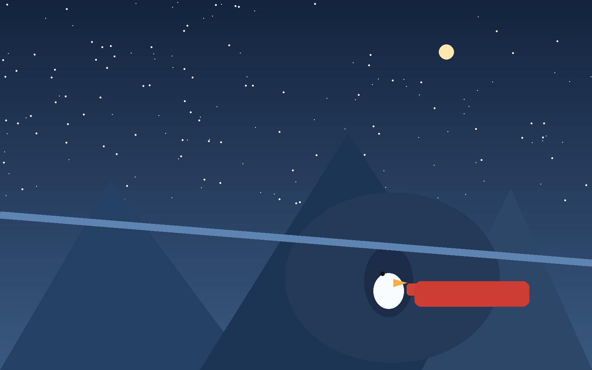
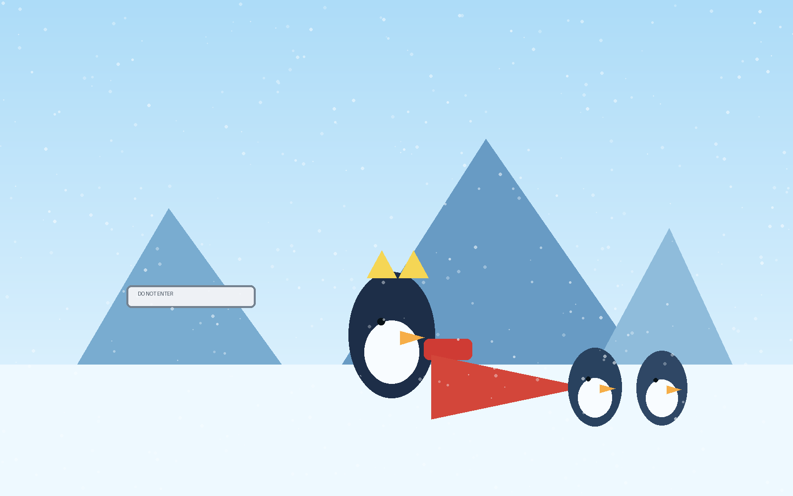

Get comfortable. This is a story about a penguin who ran in the wrong direction and found out that you cannot outride your calling.
When Nora asks someone loud and persistent to fix dangerous bad ice at Snowfall Plains, everyone looks at Finnegan. He immediately bolts the opposite way.
He shoots down a forbidden chute, crashes into an underground glacier pocket, and sits in the cold dark with his fish-sticker board, finally honest with himself.
Magnus shows up with a rescue pole and very little patience, then pulls him out and sends him where he should have gone from the start.
Finnegan reaches the stubborn glacier foxes, refuses to give up, and helps repair the hill before sunset.
Cozy landing: Wrong turns happen. Good friends and second chances can still bring you home.
Illustrated Scenes

